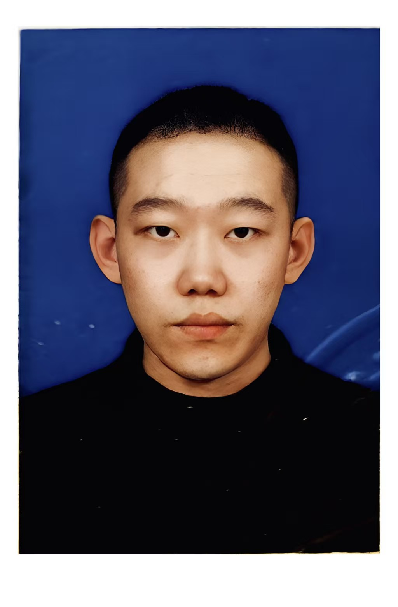
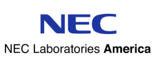

|
Jiaxin Wu (吴嘉鑫)
I am now a Ph.D. candidate in Data Science and Artificial Intelligence department at Guangdong University of Technology, advised by Prof. Jie Zhao. Interestingly, I have an interdisciplinary background. I obtained M.C. in Innovation & Entrepreneurship from University of New South Wales and B.S. in Mathematical Science from Tongji University.
My research focuses on leveraging Advanced AI to address various human-centric tasks, e.g., in recommender system and human healthcare. My works utilize human-centered design, address the shortcomings of existing models, and develop AI-driven solutions that are more responsibly and effectively satisifies human needs in real life, with less labor effort and cost:
- Recommender System (RS): utilize LLMs and GCNs for list RS, generative RS, sequential RS, bundle RS, social RS, group RS, and cross-domain RS;
- Data Mining (DM): enhance model inputs by feature selection, multi-modal fusion, data-imbalance optimization, and data-missing supplementation;
- Music AI : combine NLP and deep learning for music generation, and interpretation;
- Voice Emotion for Robot : improve robot's voice emotion recognition, and voice emotion expression for huam-robot interaction;
- Trustworthy Natural Language Processing (NLP): improve the fairness, harmlessness, robustness, interpretability, and controllability of LLMs;
- AI for Social Good : design NLP for healthcare, AI for robot detection, and AI for fake news detection;
- Human-AI Interaction: promote the development of human-AI collaboration via learning human cognition, behavior, decision-making, and feedback.
🌠News : My new paper has been published in Information Fusion 2025 (IF= 15.5)!
|

|
|
|
Contact: 1112308011 AT mail2.gdut.edu.cn or 704276515 AT qq.com
Full Publications: Google Scholar
🌟News
- July 2025: Invited talk on Organizational Development in Digital Technology at GDUT.
- June 2025: Invited talk on Frontiers of Intelligent Recommendation and Multimodal Social Computing at GDUT.
- June 2025: Organized the 24th Wuhan International Conference on E-commerce in GuangZhou, China.
- Oct. 2024: Participated the 12th China National Conference on Social Media Processing in Henan, China.
- July 2024: Participated the 2024 China Conference on Granular Computing and Discovery in Jiangsu, China.
|
🌞Education
Ph.D. 2023 - Present
Data Science and Artificial Intelligence, Guangdong University of Technology (GDUT), U.S.
Ph.D. candidate in Computer Science
Advisor: Prof. Jie Zhao.
|
|
M.C. 2020 - 2022
Commerce, University of New South Wales (UNSW), Australia
M.C. in Innovation & Entrepreneurship
|
|
B.S. 2015 - 2019
School of Mathematical Science, Tongji University, China
B.S. in Mathematical Science
|
|
|
Recommender System (RS)
|
|
Jiaxin Wu, Chenglong Pang, Guangxiong Chen, Jihong Wan, Xiaocao Ouyang, Jie Zhao*
Information Fusion 2025 (SCI I, IF=15.5<\span>) .
*Corresponding Author
|
Data Mining
Feature Selection
|
Zexue He,
Yu Wang, An Yan, Yao Liu, Eric Y Chang, Amilcare Gentili, Julian McAuley, Chun-Nan Hsu
EMNLP 2023.
|
|
Zexue He,
An Yan, Amilcare Gentili, Julian McAuley, Chun-Nan Hsu
AAAI 2023.
|
|
An Yan,
Zexue He,
Xing Lu. Jiang Du, Eric Chang, Amilcare Gentili, Julian McAuley and Chun-Nan Hsu
EMNLP 2021 Findings.
|
|
Yan, A., Wang, Y., Zhong, Y., Dong, C., He, Z., Lu, Y., Wang, W.Y., Shang, J., McAuley, J.
ICCV 2023.
|
|
Zexue He,
Li Zhu,
Minjie Li,
Jinyao Li,
Yiran Chen,
Yanlin Luo.
SCIENCE CHINA Information Sciences.
|
Accessibility for Low-Resource
|
Zexue He*,
Graeme Blackwood*, Rameswar Panda, Julian McAuley, Rogerio Feris
ACL2023 Findings.
*Equal Contribution.
|
Esthetics
|
Yu Wang, Zexue He, Zhankui He, Hao Xu, Julian McAuley
AAAI 2024 .
|
Work Experience
MIT-IBM AI Lab, Cambridge, MA
Research Scientist (Prev. Research Intern) • summer 2023 - till now
• Memory-augmented Foundation Models for Efficient Long-Context Modeling
Collaborator: Dr. Dmitry Krotov at MIT-IBM
PI: Prof. Yoon Kim at MIT;
Prof. Donghyun Kim at Korea University
Dr. Leonid Karlinsky and Dr. Rogerio Feris at MIT-IBM
• Foundation Models -- LLM Alignment and Reasoning
Collaborator: Maohao Shen at MIT
PI: Prof.Gregory Wornell at MIT;
Dr. Subhro Das at MIT-IBM
|
|
Microsoft, Redmond, Washington
Research Intern • summer 2022
Targeted Data Generation
Advisor: Dr. Fereshte Khani Prof. Marco Tulio Ribeiro
Office of Applied Research
|
|
NEC Labs, Princeton, NJ
Research Intern • June. 2021 to Sept. 2021
Multimodality Data Representation Learning
Advisor: Dr. Yuncong Chen
Data Science & System Security Group
|

|
Microsoft Research Asia, Beijing, China
Research Intern • Oct. 2019 to Dec. 2019
Algorithmic Trading: High-Frequency Time Series Machine Learning and Data Mining
Advisor: Dr. Kan Ren
Machine Learning Group
|
|
Google, Beijing, China
Engineering Practicum Intern • Jul. 2017 to Sept. 2017
Knowledge Graph Source Discovery: Wikipedia-like Sites Discovery and Analysis
Advisor: Jiang Bian, team manager
Dataz Group
|
|
|
Experiences
Machine Learning Department, Carnegie Mellon University, Pittsburgh, U.S.
Research Intern • Apr. 2018 to Oct. 2018
Robust Learning for Domain Generalization (DG) without Domain Information
Mentor: Haohan Wang, Ph.D. candidate at LTI, CMU
Advisors: Prof. Zachary C. Lipton.
|

|
Information Retrieval Group, Tsinghua University, Beijing, China
Research Assistant • Jun. 2017 to May 2018
Investigating Human Examination Behavior on Mobile Search
Advisor: Prof. Yiqun Liu
|
|
Key Laboratory of Computational Linguistic, Peking University, Beijing, China
Research Assistant • Dec. 2017 to May 2018
Leveraging Gloss Knowledge in Neural Word Sense Disambiguation (WSD)
Chinese Word Segmentation (CWS) with Character Glyph Embedding
Advisor: Prof. Baobao Chang
|

|
Engineering Research Center of Virtual Reality and Applications, Beijing Normal University, Beijing, China
Research Assistant • Jul. 2017 to Feb. 2017
Human Brain's CT-MRI Heterogeneous Data Fusion and Visualization
Advisor: Prof. Yanlin Luo
|
|
School of Life Science, Beijing Normal University, Beijing, China
Research Assistant • Nov. 2015 to Sept. 2017
Genetic Biological Parallel Computing System for NP-hard Problems
Advisor: Prof. Xudong Zhu
|
|
Honors & Awards
Gold Medal in International Genetically Engineered Machine Competition (iGEM) at Boston, Massachusetts, U.S.
• 2016
Silver Medal in International Collegiate Programming Contest at Beijing regional site (ACM/ICPC, Beijing)
• 2016
Bronze Medal in International Collegiate Programming Contest at Dalian regional site (ACM/ICPC, Dalian)
• 2016
Best Female Team in China Collegiate Programming Final Contest (CCPC Final)
• 2016
|
Scholarships
IBM Ph.D. Fellowship
• 2022-2024 • IBM
TwoSigma Ph.D. Fellowship Final Nomination
• 2022-2024 • TwoSigma
Jacobs School of Engineering Fellowship
• 2020-2021 • University of California San Diego
The First-class Scholarship for Academic Excellence
• 2018 • Beijing Normal University
The First-class Scholarship for Competition Excellence
• 2016, 2017, 2018 • Beijing Normal University
Google Intern Scholarship
• 2017 • Google Inc.
|
|